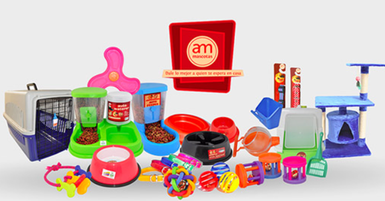

"Explora nuestra amplia gama de accesorios para mascotas diseñados para hacer que la vida con tus compañeros peludos sea aún más especial. Desde coloridos juguetes que mantienen a tus mascotas entretenidas durante horas hasta cómodas camas y elegantes correas para los paseos, tenemos todo lo que necesitas para consentir a tus amigos de cuatro patas. Nuestros accesorios están cuidadosamente seleccionados para combinar estilo, durabilidad y funcionalidad, para que tú y tus mascotas disfruten al máximo juntos. Encontrarás todo lo que necesitas para hacer que cada momento con tus peludos amigos sea memorable."
